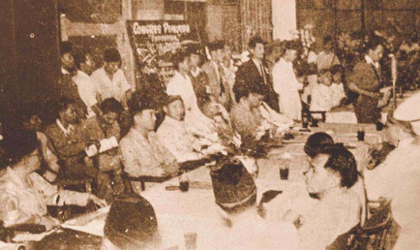

galeri



Upaya mempersatukan organisasi-organisasi pemuda pergerakan dalam satu wadah telah dimulai sejak Kongres Pemuda Pertama 1926. Sebagai kelanjutannya, tanggal 20 Februari 1927 didadakan pertemuan, namun pertemuan ini belum mencapai hasil yang final. Sebagai penggagas Kongres Pemuda Kedua ialah Perhimpunan pelajar-pelajar Indonesia (PPPI), sebuah organisasi pemuda yang beranggota pelajar dari seluruh Hindia Belanda. Pada tanggal 3 Mei 1928 diadakan pertemuan lagi untuk persiapan kongres kedua dan dilanjutkan pada 12 Agustus 1928. Pada pertemuan terakhir ini telah hadir perwakilan semua organisasi pemuda dan diputuskan untuk mengadakan kongres pada bulan Oktober 1928 dengan susunan panitia yang membagi jabatan pimpinan kepada satu organisasi pemuda “tidak ada organisasi yang rangkap jabatan”
Rapat pertama, Sabtu 27 Oktober 1928 diadakan di Gedung Katholieke Jongenlingen Bond (KJB, Waterlooplein (sekarang Lapangan Banteng). Dalam sambutannya, ketua PPPI Sugondo Djojopuspito berharap kongres ini dapat memperkuat semangat persatuan dalam sanubari para pemuda. Acara dilanjutkan dengan uraian Muhammad Yamin tentang arti dan hubungan persatuan dengan pemuda. Menurutnya ada lima faktor yang bisa memperkuat persatuan Indonesia yaitu sejarah, bahasa, hukum adat, pendidikan dan kemauan.
Rapat kedua, Minggu 28 Oktober 1928 kongres diadakan di Gedung Oost-Java Bioscoop, membahas masalah pendidikan. Kedua pembicara, Poernomowoelan dan Sarmidi Mangoensarkoro, berpendapat bahwa anak harus mendapat pendidikan kebangsaan, harus pula mendapat keseimbangan antara pendidikan di sekolah dan di ruamh. Anak juga harus dididilk secara demokratis.
Pada rapat penutupan digedung Indonesische Clubgebouw di Jalan Kramat Raya 106. Sunario menjelaskan pentingnya nasionalisme dan demokrasi selain gerakan kepanduan. Ramelan mengemukakan gerakan kepanduan tidak bisa dipisahkan dari pergerakan nasional. Gerakan kepanduan sejak dini mendidik anak-anak disiplin dan mandiri, hal-hal yang dibutuhkan dalam perjuangan.
Sebelum kongres ditutup diperdengarkan lagu Indonesia raya karya Wage Rudolf Supratman yang dimainkan dengan biola saja tanpa syair atas saran Sugondo kepada Supratman. lagu tersebut disambut dengan sangat meriah oleh peserta kongres. Kongres akhirnya ditutup dengan mengumumkan rumusan hasil kongres. Oleh para pemuda yang hadir, rumusan itu diucapkan sebagai Sumpah Setia.
Kongres Pemuda II berhasil mengambil keputusan yang dikenal sebagai Sumpah Pemuda, yang isinya sebagai berikut:
Pertama: Kami Putra dan Putri Indonesia mengaku bertumpah darah yang satu, tanah Indonesia.
Kedua: Kami Putra dan Putri Indonesia mengaku berbangsa satu, bangsa Indonesia.
Ketiga: Kami Putra dan Putri Indonesia menjunjung bahasa persatuan, bahasa Indonesia.
Rumusan tersebut dibuat oleh sekretaris panitia, Moh. Yamin dan dibacakan oleh ketua kongres, Sugondo Joyopuspito, secara hikmat didepan kongres. Selanjutnya diperdengarkan lagu Indonesia Raya yang diciptakan dan dibawakan oleh. W.R. Supratman dengan gesekan biola. Peristiwa bersejarah itu merupakan hasil kerja para pemuda pelajar Indonesia. Walaupun organisasi peserta kongres masih merupakan organisasi pemuda kedaerahan, mereka ikhlas melepaskan sifat kedaerahannya secara konsekuen meleburkan diri kedalam satu wadah yang telah disepakati bersama yaitu Indonesia Muda.